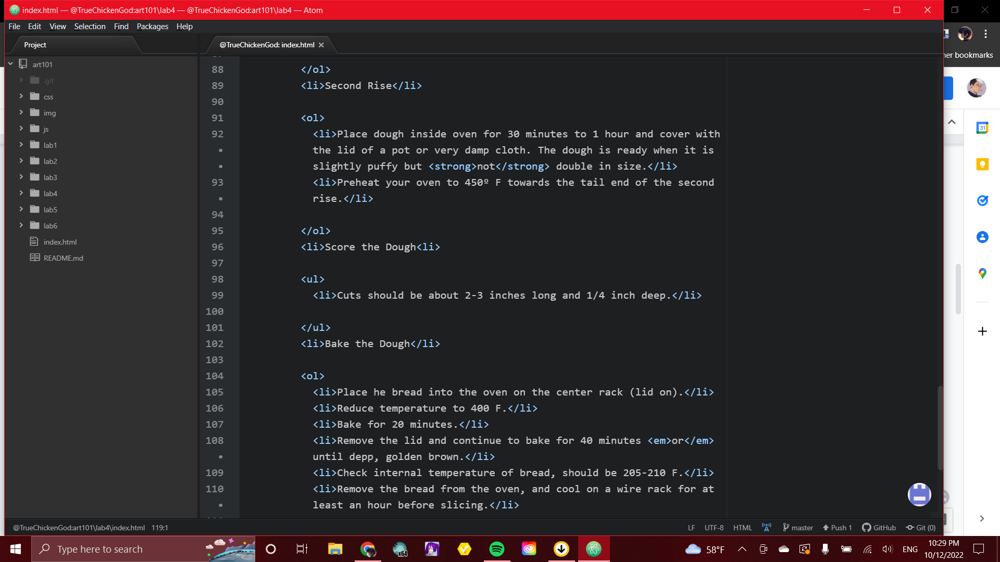
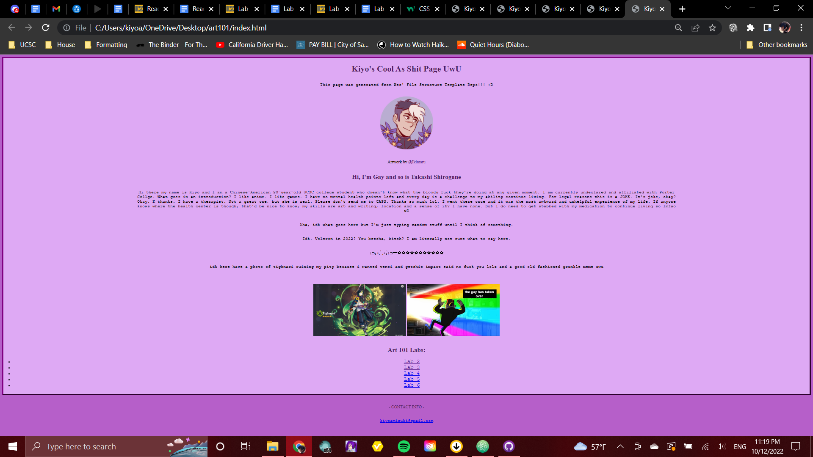

This lab was difficult for me because I still feel a though I am getting used to going everything in html and css confuses me, however, I am glad that I am getting to know things a little better with each assignment and help from my lab partner (Ramola) and Leslie as well in section. It is slowly but surely getting easier to do. I hope it's okay that I made literally everything purple iirc.
AND I DO SO HAHHAHA I WIN
Uh... Hopefully correct lol but you never know-

Again, hopefully correct lmfao but like idk comment needed so hi mom
Me: trying not to lose my files today thanks. Don't strike me down, God.
I think it looks nice and I don't take criticism. Actually no I am kidding please do not fail me Leslie I tried my rubesty :c
